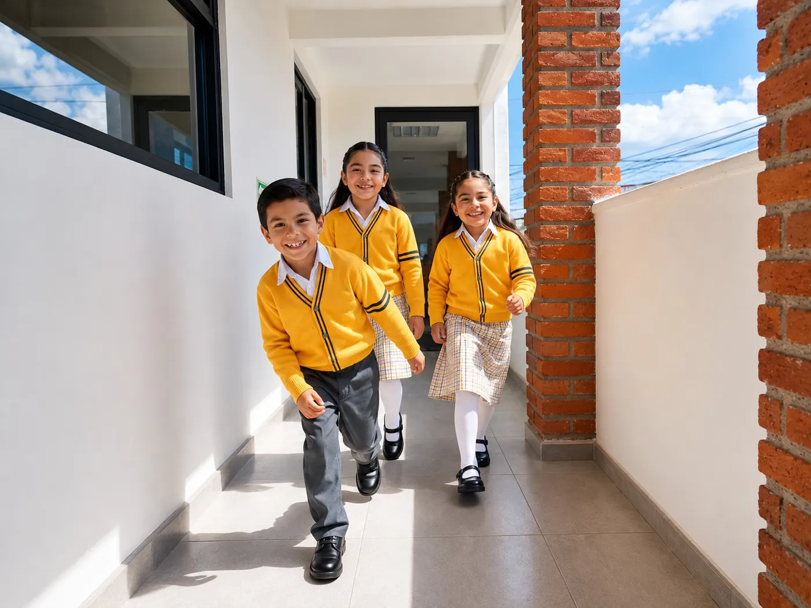

Admisiones abiertas
Te acompañamos en cada paso para que tu familia forme parte de la comunidad Abrevajams.
Cuatro pasos para inscribirte
Contáctanos
Escríbenos por WhatsApp o llena el formulario para recibir información del nivel que te interesa.
Visita la escuela
Agenda un recorrido por las instalaciones y resuelve tus dudas con nuestro equipo.
Entrega de documentos
Reúne el expediente académico, los documentos de padres o tutores y el expediente administrativo.
Inscripción
Firma el contrato de prestación de servicios y realiza el pago de inscripción para asegurar el lugar.
Conoce Abrevajams en persona
Déjanos tus datos y te contactamos por WhatsApp para confirmar el día y la hora de tu recorrido.
- Atención a clientes / WhatsApp722 616 8205
- DirecciónIndependencia 126-B Poniente, Santa Ana Tlapaltitlán, Toluca, Edo. de Méx.
Documentos para la inscripción
Te recomendamos tenerlos listos antes de tu cita de inscripción.
Expediente académico
- Ficha de inscripción
- Copia del acta de nacimiento del menor
- CURP (formato actualizado)
- Copia del reporte de evaluación de los ciclos escolares anteriores
- Expediente clínico para alumnos con necesidades especiales (NE) o necesidades educativas especiales (NEE)
- Certificado médico (institución pública o privada) con peso y talla del menor
- Comprobante de domicilio
Padres, tutores y personas autorizadas
- Copia del INE de la madre (ampliada al 200%, ambos lados)
- Copia de la CURP de la madre
- Copia del INE del padre (ampliada al 200%, ambos lados)
- Copia de la CURP del padre
- Copia del INE del tutor legal (ampliada al 200%, ambos lados)
- Copia de la sentencia donde se nombra al tutor legal o del acta de tutela
- Copia del INE de las personas autorizadas a recoger al menor (ampliada al 200%, ambos lados)
Expediente administrativo
- Constancia de situación fiscal
- Constancia de no adeudo (si aplica)
- Acuerdo de Convivencia Escolar
- Contrato de prestación de servicios
Todo lo que tu familia necesita
Horario extendido
De 2:30 a 6:30 p.m., con actividades lúdicas y formativas en un ambiente seguro y estimulante.
Taller de tareas
Acompañamiento docente en un espacio guiado y tranquilo para terminar los deberes con comprensión.
Comedor
Servicio de comedor flexible, adaptado a las necesidades de cada familia.
Actividades vespertinas
Actividades que complementan el desarrollo físico, artístico y emocional de los alumnos.
Dudas sobre admisiones
¿Cuándo puedo inscribir a mi hijo?
Las inscripciones están abiertas. Escríbenos para conocer la disponibilidad de lugares en el grado que te interesa.
¿Puedo conocer la escuela antes de inscribir?
Sí. Agenda una visita con el formulario o por WhatsApp y te mostramos las instalaciones.
¿Dónde consulto colegiaturas y cuotas?
Te compartimos cuotas, esquemas de pago y descuentos vigentes por WhatsApp al 722 616 8205 o durante tu visita.
¿Qué documentos necesito?
Consulta la lista completa en esta página: expediente académico, documentos de padres o tutores y expediente administrativo.